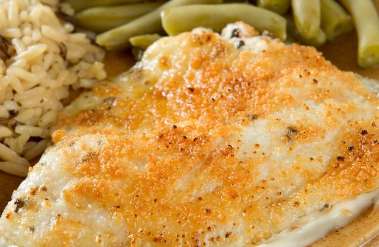

Parmesan Crusted Tilapia

Description
Fish is a great New Year's Eve meal for many reasons. Their scales can look like coins, they are abundant, and they always move forward. Some people enjoy having the fish head to represent the head of the New Year.
This recipe is another that's quick and easy and very forgiving. Adjust the flavors to match your taste. Great served with green beans and seasoned rice or quinoa.
Ingredients
- 8 4oz tilapia filets
- juice from one lemon
- 2 Tbsp melted butter
- 1 tsp garlic powder
- ~1/4 cup Parmesan
- salt and pepper to taste
- cooking spray
- lemon wedges and fresh parsley to garnish (optional)
Steps
- Preheat oven to broil. Choose hi broil if your oven has more than one temperature.
- Line a rimmed baking sheet with foil and coat with cooking spray.
- Rinse fish and pat dry. Season with salt and pepper on both sides then set fish aside.
- Combine butter, lemon juice, and garlic.
- Brush fish with butter mixture on both sides. Place filets on the prepared tray bottom-side facing up.
- Place in broiler for 5 minutes
- Remove fish, flip over, and then coat with the Parmesan cheese.
- Return to broil for another 5-7 minutes. Remove when cooked though and flaky.
- Garnish with lemon wedges and parsley as desired.